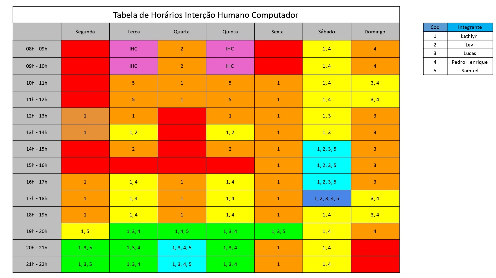

Cronograma
1. Introdução
O cronograma tem como objetivo mostrar visualmente as tarefas a serem entregas em cada ponto de controle da disciplina e suas datas. As datas e tarefas foram montadas baseadas no plano de ensino.
2. Cronograma de Atividades
2.1 Entrega 1
| Atividade |
Data |
| Lista de sites avaliados |
26/jun |
| Site escolhido |
30/jun |
| Ferramentas do projeto |
08/jul |
| Planejamento do projeto |
08/jul |
| Cronograma de atividades |
08/jul |
| Adicionar equipe/sobre |
08/jul |
| Processo de design |
08/jul |
| Gravar apresentação |
09/jul |
2.2 Entrega 2
| Atividade |
Data |
| Perfil do usuário |
15/jul |
| Aspectos Éticos de pesquisa |
16/jul |
| Personas |
17/jul |
| Análise de Tarefa |
18/jul |
| Gravar apresentação |
19/jul |
2.3 Entrega 3
| Atividade |
Data |
| Princípios gerais do projeto |
24/jul |
| Metas de usabilidade |
36/jul |
| Guia de estilo |
28/jul |
| Gravar apresentação |
30/jul |
2.4 Entrega 4
| Atividade |
Data |
| Planejamendo da avaliação do storyboard |
05/ago |
| Planejamendo da avaliação da análise de tarefas |
05/ago |
| Resultados do storyboard |
08/ago |
| Resultado da análise de tarefas |
08/ago |
| Gravar apresentação |
09/ago |
2.5 Entrega 5
| Atividade |
Data |
| Resultados do Storyboard |
12/ago |
| Resultado da análise de tarefas |
13/ago |
| Planejamento da avaliação do protótipo em papel |
14/ago |
| Resultados da avaliação do protótipo em papel |
14/ago |
| Gravar apresentação |
16/ago |
2.6 Entrega 6
| Atividade |
Data |
| Verificação dos artefatos |
19/ago |
| Gravar apresentação |
20/ago |
2.7 Entrega 7
| Atividade |
Data |
| Resultados da avaliação do protótipo em papel |
01/set |
| Avaliação do protótipo de alta fidelidade |
01/set |
| Resultados da avaliação do protótipo de alta fidelidade |
02/set |
| Gravar apresentação |
03/set |
2.8 Entrega Final
| Atividade |
Data |
| Corrigir e completar todos os artefatos |
09/set |
| Gravar apresentação |
10/set |
3. Heatmap
O heatmap (conferir Figura 1) tem como objetivo mostrar visualmente a disponibilidade dos integrantes do grupo para realização de reuniões.

Figura 1: Heatmap
Fonte: Elaboração Própria
Histórico de versões
| Versão |
Alteração |
Autor(es) |
Revisor(es) |
Data |
| 1.0 |
- |
Kathlyn |
Lucas |
06/07/2022 |
| 1.1 |
Correções no código |
Lucas |
|
10/07/2022 |
Referências
- Plano de ensino da disciplina Interação-Humano-Computador UnB 2022-1